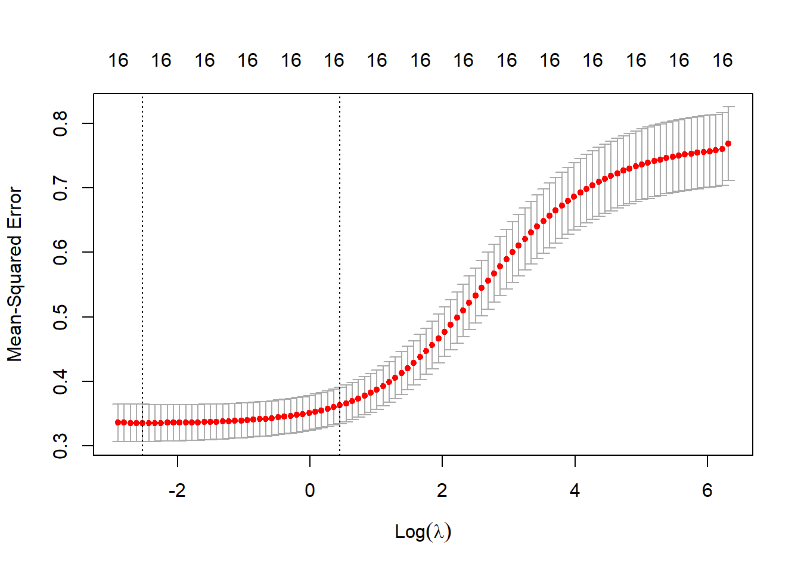

Loading required package: MatrixLoaded glmnet 4.1-7You work for a consulting company to understand the factors on which professional Baseball players’ salaries depend.
You are given individual data for professional players in the Major League along with their 1986 performance measures and 1987 salary.
The business goal of the consulting firm is to model the logged salary of professional Baseball players with the available independent variables. Your findings will be used by the company clients to understand how exactly the logged salaries vary with the independent variables.
The data consists of 263 observations of 16 attributes. Below is a brief description of the variables in the data:
Attributes:
CrAtBat Career Times at Bat
CrBB Career Walks
CrHits Career Hits
CrHome Career Home Runs
CrRbi Career RBIs
CrRuns Career Runs
YrMajor Years in the Major Leagues
nAssts Assists in 1986
nAtBat Times at Bat in 1986
nBB Walks in 1986
nError Errors in 1986
nHits Hits in 1986
nHome Home Runs in 1986
nOuts Put Outs in 1986
nRBI RBIs in 1986
nRuns Runs in 1986
Outcome:
LogSalary: Log of 1987 Salary in $ Thousands
Below, the dataset is loaded and then split into a train and test sets in a 80:20 ratio. Your job is to use the training set to build the models in Parts 1-3. In Part 4, you will use the test set to check the model performance.
Loading required package: MatrixLoaded glmnet 4.1-7You will only use trainData in Part 1.
By using the trainData, fit a standard linear regression with the variable logSalary as the response and all other attributes as predictors. Name it as model_full.
According to the model_full results, which regression coefficients are statistically significant at the 99% confidence level? Select all that apply.
#fit a standard linear regression with the variable logSalary as the response and all other attributes as predictors. Name it as model_full
model_full <- lm(logSalary ~ ., data = trainData)
summary(model_full)
Call:
lm(formula = logSalary ~ ., data = trainData)
Residuals:
Min 1Q Median 3Q Max
-2.23518 -0.38604 0.05403 0.41878 1.26539
Coefficients:
Estimate Std. Error t value Pr(>|t|)
(Intercept) 4.2375266 0.1761098 24.062 < 2e-16 ***
nAtBat -0.0020377 0.0012827 -1.589 0.113778
nHits 0.0123668 0.0047572 2.600 0.010051 *
nHome 0.0075024 0.0117295 0.640 0.523177
nRuns -0.0037564 0.0059536 -0.631 0.528818
nRBI -0.0006802 0.0050769 -0.134 0.893558
nBB 0.0123192 0.0035077 3.512 0.000553 ***
YrMajor 0.0808472 0.0235407 3.434 0.000726 ***
CrAtBat 0.0001220 0.0002560 0.477 0.634204
CrHits -0.0006232 0.0013110 -0.475 0.635080
CrHome -0.0005427 0.0030564 -0.178 0.859254
CrRuns 0.0014737 0.0014468 1.019 0.309637
CrRbi 0.0003649 0.0013122 0.278 0.781236
CrBB -0.0015703 0.0006199 -2.533 0.012100 *
nOuts 0.0004799 0.0001641 2.924 0.003863 **
nAssts 0.0001767 0.0004413 0.400 0.689301
nError -0.0020375 0.0091949 -0.222 0.824867
---
Signif. codes: 0 '***' 0.001 '**' 0.01 '*' 0.05 '.' 0.1 ' ' 1
Residual standard error: 0.5602 on 194 degrees of freedom
Multiple R-squared: 0.6193, Adjusted R-squared: 0.5879
F-statistic: 19.72 on 16 and 194 DF, p-value: < 2.2e-16# Get the regression results
summary(model_full)$coefficients Estimate Std. Error t value Pr(>|t|)
(Intercept) 4.2375266336 0.1761098353 24.0618397 3.840334e-60
nAtBat -0.0020376716 0.0012826800 -1.5886048 1.137780e-01
nHits 0.0123668353 0.0047572285 2.5995882 1.005137e-02
nHome 0.0075023660 0.0117294886 0.6396158 5.231770e-01
nRuns -0.0037564081 0.0059536028 -0.6309471 5.288178e-01
nRBI -0.0006802062 0.0050769358 -0.1339797 8.935575e-01
nBB 0.0123192076 0.0035076666 3.5120806 5.530162e-04
YrMajor 0.0808472281 0.0235407122 3.4343578 7.262501e-04
CrAtBat 0.0001219822 0.0002559580 0.4765714 6.342037e-01
CrHits -0.0006231532 0.0013109652 -0.4753392 6.350800e-01
CrHome -0.0005426989 0.0030564221 -0.1775602 8.592537e-01
CrRuns 0.0014737384 0.0014467526 1.0186527 3.096365e-01
CrRbi 0.0003649257 0.0013122380 0.2780942 7.812362e-01
CrBB -0.0015703150 0.0006199406 -2.5330089 1.210030e-02
nOuts 0.0004799025 0.0001641079 2.9243105 3.863220e-03
nAssts 0.0001766795 0.0004412550 0.4004023 6.893008e-01
nError -0.0020374804 0.0091948797 -0.2215886 8.248672e-01#Get the p values
summary(model_full)$coefficients[,4] (Intercept) nAtBat nHits nHome nRuns nRBI
3.840334e-60 1.137780e-01 1.005137e-02 5.231770e-01 5.288178e-01 8.935575e-01
nBB YrMajor CrAtBat CrHits CrHome CrRuns
5.530162e-04 7.262501e-04 6.342037e-01 6.350800e-01 8.592537e-01 3.096365e-01
CrRbi CrBB nOuts nAssts nError
7.812362e-01 1.210030e-02 3.863220e-03 6.893008e-01 8.248672e-01 # Get the coefficients with p values less than 0.01
names(which(summary(model_full)$coefficients[,4]<.01))[1] "(Intercept)" "nBB" "YrMajor" "nOuts" data.frame(coef=names(which(summary(model_full)$coefficients[,4]<.01))) coef
1 (Intercept)
2 nBB
3 YrMajor
4 nOutsCalculate the mean-squared prediction error (MSPE), the adjusted \(R^2\) , AIC, and BIC criterion values for model_full. Enter your selection in Canvas by selecting the closest answer choice from the list.
# Insert your R code for Question 2 in here
# HINTS:
# You can whether manually calculate or use a package to calculate MSPE
# Adjusted R Square is stored under model_full R object
# You can consider using AIC() function in stats package to calculate the AIC value
# You can consider using BIC() function in stats package to calculate the BIC value
# If you want to print all your answers in one dataframe you can just put it in a dataframe with data.frame(MSPE=, ADJR2=, AIC=, BIC=) or just print them separately
# mean-squared prediction error (MSPE)
MSPE_fullmodel=mean(model_full$residuals^2)
MSPE_fullmodel[1] 0.2885564# Adjusted R-squared
RSquared_Adj_fullmodel<-summary(model_full)$adj.r.squared
RSquared_Adj_fullmodel[1] 0.5878716# AIC
AIC<-AIC(model_full)
AIC[1] 372.5476# BIC
BIC<-BIC(model_full)
BIC[1] 432.8811So far, we did not do any feature selection. Instead, we have calculated the Adjusted R-squared, AIC, and BIC criterion values for the full model with all features are included as predictor in our largest model. In the following parts, we will choose the best sub-model based on one of these criterion values.
Now, your task is to predict logSalary with all the predictors in trainData, then calculate the mean squared prediction errors (MSPE) in the trainData based on 5-fold, 10-fold and leave one out cross-validation approaches?
Use cv.glm function in R to calculate the cross validated estimates. Use set.seed(5410) when you calculate the cross-validated estimates
Note: Is there an increase or decrease in MSPE with cross validation? You should be able to tell why MSPE is going up with cross-validation method.Since we assume you all know why, you are not required to enter your response in Canvas.
# Insert your R code for Question 3 in here
# HINTS:
# You can first create a linear model with glm() function modglm=glm(logSalary ~ ., data = trainData), then call it inside the cv.glm() function
# cv.glm(, K=5) gives you the 5 fold-cross validation results
# cv.glm(, K=10) gives you the 10 fold-cross validation results
# cv.glm(, K=n) gives you the LOOCV results when n is the number of rows in trainData
# cv.glm() R object stores two information under delta (cv.glm()$delta). The first information gives the cross-validation estimate of prediction error, MSPE, that is the answer.
#set the seed
set.seed(5410)
#creating linear model using glm and using training data
modglm=glm(logSalary ~ ., data = trainData)
#calculate the mean squared prediction errors (MSPE) in the trainData based on 5-fold
cv5fold <- cv.glm(trainData, modglm, K = 5)
mspe_5fold <- cv5fold$delta[1]
print(mspe_5fold)[1] 0.3603185#calculate the mean squared prediction errors (MSPE) in the trainData based on 10-fold
cv10fold <- cv.glm(trainData, modglm, K = 10)
mspe_10fold <- cv10fold$delta[1]
print(mspe_10fold)[1] 0.3544171#calculate the mean squared prediction errors (MSPE) in the trainData based on leave one out cross-validation
cvl <- cv.glm(trainData, modglm, K = nrow(trainData))
mspe_l <- cvl$delta[1]
print(mspe_l)[1] 0.3530806data.frame(CV5fold=mspe_5fold, CV10fold=mspe_10fold, LeaveOO=mspe_l) CV5fold CV10fold LeaveOO
1 0.3603185 0.3544171 0.3530806You will only use trainData in Part 2.
What is the total number of different models that can be built from all possible combinations of the predictors with p=16?
No coding is needed for Question 4. Just answer it in Canvas.
Warning: This question can be challenging.
In this part, we will use leaps function in the leaps library in R to compare all possible models and decide on the best model by using Adjusted R-squared criteria on trainData.
Which set of predictors will give you the highest Adjusted R-squared value when we use the trainData to train all possible subset models. Use leaps function in the leaps library in R to compare all possible models and decide on the best model. You can use leaps package and set the nbest parameter to 1 to get the desired table.
The leaps function in R can help you to construct a table indicating the variables included in the best model of each size (p=1,p=2,…, p=16) and the corresponding Adjusted R-squared value. Hint: The table must include 16 rows, the best subset for each k. Check the lab help recordings for the details. You can use leaps package and set the nbest parameter to 1 to get the desired table. Alternatively, you can use `regsubsets` function in leaps package to get the same results.
# Insert your R code for Question 5 in here
# HINTS:
# You can store the predictor names with col_names = names(trainData)[-17] and insert it into leaps() function as names= col_names)
# nbest=1 will give you the highest performing model for each set (models with only 1 predictor, models with only two predictors, ,,,,, models with only 16 predictor)
# After creating the leaps object, you can first fet the index of best model with which () function, then print the best AdjR2 values for each set
# In the leaps () output, the coefficient 1 in front a coefficient indicates it has been selected on that set, O means not selected
# use all 16 subsets using regsubsets
leaps_md <- regsubsets(logSalary ~ ., data = trainData, nvmax = 16, nbest=1)
# Get the best subset model with the highest adjusted R-squared
best_subset <- summary(leaps_md)$which[which.max(summary(leaps_md)$adjr2),]
print(best_subset)(Intercept) nAtBat nHits nHome nRuns nRBI
TRUE TRUE TRUE FALSE FALSE FALSE
nBB YrMajor CrAtBat CrHits CrHome CrRuns
TRUE TRUE FALSE FALSE FALSE TRUE
CrRbi CrBB nOuts nAssts nError
FALSE TRUE TRUE FALSE FALSE # Get the names of the predictors in the best subset model
predictor_names <-names(trainData)[-1]
best_predictors <- predictor_names[best_subset[-1]]
print(best_predictors)[1] "nHits" "nHome" "YrMajor" "CrAtBat" "CrRbi" "nOuts" "nAssts" data.frame(prednames=best_predictors) prednames
1 nHits
2 nHome
3 YrMajor
4 CrAtBat
5 CrRbi
6 nOuts
7 nAsstsYou will only use trainData in Part 3.
Now, we will use the trainData and perform RIDGE regression on the full model (model_full). Before performing Ridge regression, we need to standardize the predictors but there are some packages that standardize variables for you. In that case, there is no need to standardize predictors twice. For this RLab assignment, please use glmnet package so that you do not have to worry about standardizing your features.
Your task is to write an R code to apply Ridge regression on trainData set with 10-fold cross validation. Print the optimized lambda value and the minimum mean cross-validated Error. Keep the default loss function (type.measure=“mse”).
# Insert your R code for Question 6 in here
# HINTS:
# in cv.glmnet() function choose family='gaussian', type.measure="mse", alpha=0, nfolds=10 for the desired results
# optimized lamba is stored under the cv.glmnet() R object
# Minimum Mean CV Error is stored under cv.glmnet() R object
# Optimize lambda using 10-fold cross validation
set.seed(5410)
#make into a matrix
y <- trainData$logSalary
x <- as.matrix(trainData[,-17])
#RIDGE regression using glmnet package
ridge <- cv.glmnet(x, y, family = 'gaussian', type.measure = "mse", alpha = 0, nfolds = 10)
#Print the optimized lambda value
optlambda <- ridge$lambda.min
print(optlambda)[1] 0.08008381#Print minimum mean cross-validated Error
minmse <- ridge$cvm[which.min(ridge$cvm)]
print(minmse)[1] 0.3358273data.frame(optimized_lv=optlambda, min_mcv_Error=minmse) optimized_lv min_mcv_Error
1 0.08008381 0.3358273################practice 4 code from professor#########################
## Find the optimal lambda using 10-fold CV
# set alpha=0 for RIDGE
# set alpha=1 for LASSO
# set alpha=0.5 for ELASTIC NET
# predictors and the target variable
y.train = trainData$logSalary
predictors.train = trainData[,-17]
y.test = testData$logSalary
predictors.test = testData[,-17
]
set.seed(5410)
# Optimize lambda using 10-fold cross validation, keep the default lambda selection
RidgeCV = cv.glmnet(as.matrix(predictors.train), y.train,
family='gaussian', type.measure="mse", alpha=0, nfolds=10)
# plot
plot(RidgeCV)
# check the values of lambda used in the fits
RidgeCV$lambda [1] 551.98664459 502.94967242 458.26900971 417.55765393 380.46298279
[6] 346.66370000 315.86705234 287.80629397 262.23837604 238.94184148
[11] 217.71490683 198.37371456 180.75074050 164.69334288 150.06244021
[16] 136.73130661 124.58447418 113.51673286 103.43221918 94.24358590
[21] 85.87124548 78.24268070 71.29181659 64.95844809 59.18771860
[26] 53.92964481 49.13868380 44.77333856 40.79579856 37.17161226
[31] 33.86938867 30.86052553 28.11896150 25.62095046 23.34485583
[36] 21.27096318 19.38130944 17.65952733 16.09070359 14.66124983
[41] 13.35878480 12.17202718 11.09069783 10.10543080 9.20769218
[46] 8.38970619 7.64438781 6.96528147 6.34650506 5.78269904
[51] 5.26898000 4.80089834 4.37439976 3.98579014 3.63170353
[56] 3.30907300 3.01510407 2.74725054 2.50319237 2.28081566
[61] 2.07819428 1.89357323 1.72535340 1.57207776 1.43241871
[66] 1.30516658 1.18921918 1.08357222 0.98731065 0.89960069
[71] 0.81968265 0.74686430 0.68051493 0.62005986 0.56497545
[76] 0.51478459 0.46905255 0.42738321 0.38941567 0.35482105
[81] 0.32329973 0.29457867 0.26840911 0.24456439 0.22283796
[86] 0.20304165 0.18500399 0.16856875 0.15359356 0.13994873
[91] 0.12751607 0.11618790 0.10586608 0.09646123 0.08789188
[96] 0.08008381 0.07296939 0.06648699 0.06058047 0.05519866# check the mean cross-validated error for each lambda used
RidgeCV$cvm [1] 0.7679549 0.7598305 0.7576884 0.7566163 0.7554446 0.7541646 0.7527668
[8] 0.7512412 0.7495769 0.7477623 0.7457852 0.7436324 0.7412901 0.7387436
[15] 0.7359777 0.7329757 0.7297220 0.7261991 0.7223895 0.7182752 0.7138386
[22] 0.7090620 0.7039282 0.6984208 0.6925244 0.6862254 0.6795120 0.6723749
[29] 0.6648079 0.6568083 0.6483776 0.6395218 0.6302523 0.6205860 0.6105456
[36] 0.6001602 0.5894658 0.5785037 0.5673201 0.5559687 0.5445072 0.5329969
[43] 0.5215019 0.5100876 0.4988194 0.4877613 0.4769743 0.4665151 0.4564347
[50] 0.4467777 0.4375807 0.4288709 0.4206707 0.4129924 0.4058403 0.3992113
[57] 0.3930958 0.3874785 0.3823388 0.3776527 0.3733932 0.3695313 0.3660374
[64] 0.3628815 0.3600345 0.3574683 0.3551552 0.3530691 0.3511931 0.3495030
[71] 0.3479827 0.3466148 0.3453825 0.3442671 0.3432613 0.3423601 0.3415460
[78] 0.3408089 0.3401454 0.3395523 0.3390156 0.3385331 0.3381031 0.3377217
[85] 0.3373805 0.3370776 0.3368124 0.3365861 0.3363904 0.3362294 0.3360910
[92] 0.3359878 0.3359071 0.3358496 0.3358275 0.3358273 0.3358534 0.3358974
[99] 0.3359693 0.3360225# get the minimum mean cross-validated error
min(RidgeCV$cvm) [1] 0.3358273# # number of non-zero coefficients at each lambda. For Ridge, it is all same and equal to number of predictors
# RidgeCV$nzero
# get the value of lambda which gives you the minimum cross-validated error
RidgeCV$lambda.min[1] 0.08008381# Use the best lambda and predict the target variable in the test set, calculate MSPE
RidgePredictTest<-predict(RidgeCV,s=RidgeCV$lambda.min,newx=as.matrix(predictors.test))
# Calculate the MSPE in the test set
MSPE_Ridge_test<-mean((RidgePredictTest-y.test)^2)
data.frame(optimized_lv=RidgeCV$lambda.min, min_mcv_Error=min(RidgeCV$cvm) ) optimized_lv min_mcv_Error
1 0.08008381 0.3358273Now, we will use the trainData and perform LASSO regression on the full model (model_full). Please use glmnet package so that you do not have to worry about standardizing your features.
Your task is to write an R code to apply LASSO regression on trainData set with 10-fold cross validation. Print the optimized lambda value and the minimum mean cross-validated Error. Keep the default loss function (type.measure=“mse”).
# Insert your R code for Question 7 in here
# HINTS:
# in cv.glmnet() function choose family='gaussian', type.measure="mse", alpha=0, nfolds=10 for the desired results
# optimized lamba is stored under the cv.glmnet() R object
# Minimum Mean CV Error is stored under cv.glmnet() R object
# set alpha=0 for RIDGE
# set alpha=1 for LASSO
set.seed(5410)
# Convert trainData to matrix format
X <- as.matrix(trainData[, -17])
y <- trainData$logSalary
# Perform LASSO regression with 10-fold cross validation
lasso_fit <- cv.glmnet(X, y, family = "gaussian", type.measure = "mse", alpha = 1, nfolds = 10)
# Print the optimized lambda value and the minimum mean cross-validated error
cat("Optimal lambda value:", lasso_fit$lambda.min, "\n")Optimal lambda value: 0.02811896 cat("Minimum mean cross-validated error:", lasso_fit$cvm[lasso_fit$lambda == lasso_fit$lambda.min], "\n")Minimum mean cross-validated error: 0.3273982 ################practice 4 code from professor#########################
## Find the optimal lambda using 10-fold CV
# set alpha=0 for RIDGE
# set alpha=1 for LASSO
# set alpha=0.5 for ELASTIC NET
# predictors and the target variable
y.train = trainData$logSalary
predictors.train = trainData[,-17]
y.test = testData$logSalary
predictors.test = testData[,-17]
set.seed(5410)
# Optimize lambda using 10-fold cross validation, keep the default lambda selection
LassoCV = cv.glmnet(as.matrix(predictors.train), y.train,
family='gaussian', type.measure="mse", alpha=1, nfolds=10)
# check the values of lambda used in the fits
LassoCV$lambda [1] 5.519866e-01 5.029497e-01 4.582690e-01 4.175577e-01 3.804630e-01
[6] 3.466637e-01 3.158671e-01 2.878063e-01 2.622384e-01 2.389418e-01
[11] 2.177149e-01 1.983737e-01 1.807507e-01 1.646933e-01 1.500624e-01
[16] 1.367313e-01 1.245845e-01 1.135167e-01 1.034322e-01 9.424359e-02
[21] 8.587125e-02 7.824268e-02 7.129182e-02 6.495845e-02 5.918772e-02
[26] 5.392964e-02 4.913868e-02 4.477334e-02 4.079580e-02 3.717161e-02
[31] 3.386939e-02 3.086053e-02 2.811896e-02 2.562095e-02 2.334486e-02
[36] 2.127096e-02 1.938131e-02 1.765953e-02 1.609070e-02 1.466125e-02
[41] 1.335878e-02 1.217203e-02 1.109070e-02 1.010543e-02 9.207692e-03
[46] 8.389706e-03 7.644388e-03 6.965281e-03 6.346505e-03 5.782699e-03
[51] 5.268980e-03 4.800898e-03 4.374400e-03 3.985790e-03 3.631704e-03
[56] 3.309073e-03 3.015104e-03 2.747251e-03 2.503192e-03 2.280816e-03
[61] 2.078194e-03 1.893573e-03 1.725353e-03 1.572078e-03 1.432419e-03
[66] 1.305167e-03 1.189219e-03 1.083572e-03 9.873107e-04 8.996007e-04
[71] 8.196826e-04 7.468643e-04 6.805149e-04 6.200599e-04 5.649755e-04
[76] 5.147846e-04 4.690525e-04 4.273832e-04 3.894157e-04 3.548211e-04
[81] 3.232997e-04 2.945787e-04 2.684091e-04 2.445644e-04 2.228380e-04
[86] 2.030417e-04 1.850040e-04 1.685687e-04 1.535936e-04 1.399487e-04
[91] 1.275161e-04 1.161879e-04 1.058661e-04 9.646123e-05 8.789188e-05# check the mean cross-validated error for each lambda used
LassoCV$cvm [1] 0.7626211 0.7187932 0.6760854 0.6392750 0.5997779 0.5604548 0.5271149
[8] 0.4992653 0.4757857 0.4561568 0.4394270 0.4245270 0.4101772 0.3974488
[15] 0.3863127 0.3761086 0.3671351 0.3597222 0.3535889 0.3485056 0.3442905
[22] 0.3407671 0.3378377 0.3354091 0.3333952 0.3317336 0.3304095 0.3293499
[29] 0.3285591 0.3279986 0.3276412 0.3274580 0.3273982 0.3274368 0.3274758
[36] 0.3275753 0.3276430 0.3277422 0.3279767 0.3284754 0.3291566 0.3297704
[43] 0.3303295 0.3304384 0.3308049 0.3314659 0.3323501 0.3332565 0.3341670
[50] 0.3350029 0.3358140 0.3363474 0.3368794 0.3374337 0.3378634 0.3382775
[57] 0.3386807 0.3389410 0.3392166 0.3395085 0.3398727 0.3402306 0.3405162
[64] 0.3407739 0.3410502 0.3412376 0.3415589 0.3418119 0.3421818 0.3426265
[71] 0.3431192 0.3436312 0.3441581 0.3446797 0.3452148 0.3456916 0.3460967
[78] 0.3464822 0.3467951 0.3470576 0.3473081 0.3476005 0.3478981 0.3481523
[85] 0.3483630 0.3485405 0.3487013 0.3488507 0.3489915 0.3491191 0.3492364
[92] 0.3493366 0.3494263 0.3495150 0.3495930# get the minimum mean cross-validated error
min(LassoCV$cvm) [1] 0.3273982# optimal lambda
LassoCV$lambda.min[1] 0.02811896# number of non-zero coefficients at each lambda.
LassoCV$nzero s0 s1 s2 s3 s4 s5 s6 s7 s8 s9 s10 s11 s12 s13 s14 s15 s16 s17 s18 s19
0 1 2 2 3 3 3 4 4 4 4 5 5 5 6 7 7 7 7 7
s20 s21 s22 s23 s24 s25 s26 s27 s28 s29 s30 s31 s32 s33 s34 s35 s36 s37 s38 s39
7 7 7 7 7 7 7 7 7 7 7 7 7 7 8 9 9 9 9 9
s40 s41 s42 s43 s44 s45 s46 s47 s48 s49 s50 s51 s52 s53 s54 s55 s56 s57 s58 s59
10 10 10 10 10 9 10 11 11 12 12 12 12 13 13 13 13 13 13 13
s60 s61 s62 s63 s64 s65 s66 s67 s68 s69 s70 s71 s72 s73 s74 s75 s76 s77 s78 s79
14 14 15 15 15 14 14 14 14 14 14 14 14 15 15 15 15 15 15 15
s80 s81 s82 s83 s84 s85 s86 s87 s88 s89 s90 s91 s92 s93 s94
16 16 16 16 16 16 16 16 16 16 16 16 16 15 15 # numnber of features at the optimal lambda
LassoCV$nzero[LassoCV$lambda == LassoCV$lambda.min]s32
7 # Use the best lambda and predict the target variable in the test set with Lasso and calculate MSPE
LassoPredictTest<-predict(LassoCV,s=LassoCV$lambda.min,newx=as.matrix(predictors.test))
MSPE_Lasso_test<-mean((LassoPredictTest-y.test)^2)
data.frame(optimized_lv=LassoCV$lambda.min, min_mcv_Error=min(LassoCV$cvm) ) optimized_lv min_mcv_Error
1 0.02811896 0.3273982Which variables were selected based on LASSO?
# Insert your R code for Question 7 in here
# HINTS: use coef() to extract the coefficients. Any coefficient with 0 estimate is dropped from the regression
lasso_coef <- coef(LassoCV, s = LassoCV$lambda.min)
selected_vars <- rownames(lasso_coef)[lasso_coef[,1] != 0]
print(selected_vars)[1] "(Intercept)" "nHits" "nRBI" "nBB" "YrMajor"
[6] "CrHits" "CrRbi" "nOuts" # Insert your R code for Question 7 in here
# HINTS: use coef() to extract the coefficients. Any coefficient with 0 estimate is dropped from the regression
# Fit Lasso model
# Fit Lasso model
# Fit Lasso model
LassoCV = cv.glmnet(as.matrix(predictors.train), y.train,
family='gaussian', type.measure="mse", alpha=1, nfolds=10)
# Get coefficients for optimal lambda
opt_lambda = LassoCV$lambda.min
coef_LassoCV = coef(LassoCV, s=opt_lambda)
print(coef_LassoCV)17 x 1 sparse Matrix of class "dgCMatrix"
s1
(Intercept) 4.226378e+00
nAtBat .
nHits 6.229214e-03
nHome 3.335577e-04
nRuns .
nRBI 9.501867e-04
nBB 5.541235e-03
YrMajor 6.741847e-02
CrAtBat .
CrHits 1.685110e-04
CrHome .
CrRuns .
CrRbi 2.575131e-05
CrBB .
nOuts 3.876770e-04
nAssts .
nError -1.743525e-04You will only use testData in Part 4.
Now, it is time to put all the fitted models a test. Predict logSalary for each of the rows in the test data, testData, using model_full in Part 1, best subset model in Part 2, and Ridge and Lasso Regression models in Part 3.
Calculate the MSPE on the test set for each model and insert your answer in Canvas.
# Insert your R code for Question 7 in here
OLSmodel<-lm(logSalary~.,data=testData)
OLSPredictTest<-predict(OLSmodel,newx=as.matrix(predictors.test))
MSPE_OLS_test<-mean((OLSPredictTest-y.test)^2)
# performance comparison
# OLS
MSPE_OLS_test[1] 0.2048143# Ridge
MSPE_Ridge_test[1] 0.4300489#Lasso
MSPE_Lasso_test[1] 0.4287379data.frame(MSPE_OLS_test=MSPE_OLS_test, MSPE_Ridge_test=MSPE_Ridge_test,MSPE_Lasso_test=MSPE_Lasso_test ) MSPE_OLS_test MSPE_Ridge_test MSPE_Lasso_test
1 0.2048143 0.4300489 0.4287379